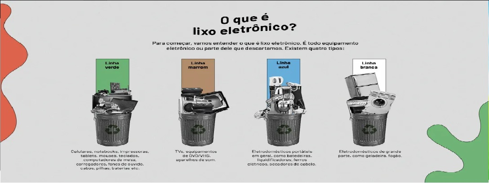

Eletro Lixo
O eletro lixo representa um desafio significativo para a gestão de resíduos, mas também oferece oportunidades importantes para a recuperação de materiais valiosos e a promoção da sustentabilidade ambiental.

COLETA DE LIXO ELETRONICO
Você pode agendar a coleta do seu eletro lixo de maneira rápida e conveniente através do nosso site ou entrando em contato com nossa equipe. Basta nos informar o local, data e hora mais adequados para você, e faremos o resto.

TIPOS DE LIXO ELETRONICO
O eletro lixo, ou lixo eletrônico, pode ser categorizado em diferentes tipos com base em sua origem, função e características.